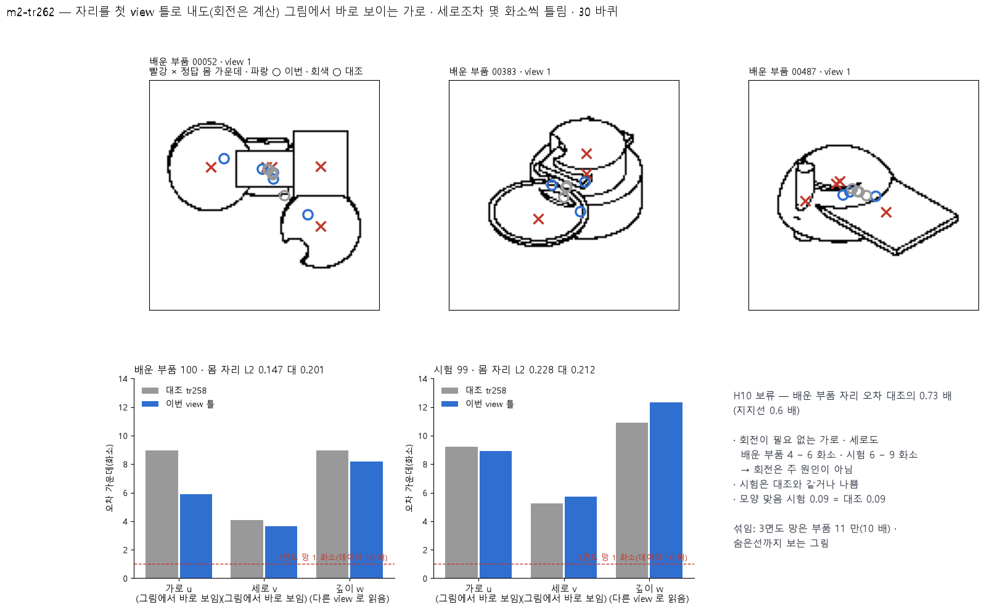

실험 m2_tr0262_h010_view틀
목표 G1.2 view 모음 → 파츠별 CAD code(CadQuery · 그 전 「3 면도 → 파츠별 CAD」 · 지금 M2 는 위 · 앞 · 옆 고정 세 장만 받음 → 아무 각도 N 장으로 바꿀 것 · 11-20) · G1 첫 제품 — 피규어 · 메카 사진 여러 장 + 치수 → 숨은선 3 면도 + 파츠별 CAD · G0 임의의 이미지 → CAD 코드 · 빌린 가정 4: 생성기기하 · 정답3D · 시점앎 · 정사영 · 갚는 계획: 정답 view · 정답 각도 — m1 의 view · 추정 각도를 넣는 판에서 정답3D · 시점앎을 갚음(돌림에 추정 각도를 쓰므로 각도 틀림 판을 같이 잼) · 생성기기하는 원화CAD짝 시험지로 · 정사영은 원근 렌더로 그 뒤 · 목표 시험지 값: 안 잼 (!)
몸 자리를 첫 view 기준(가로 · 세로 · 깊이)으로 내고 물체 기준으로는 각도로 돌리면, m2 가 방위에 따라 도는 x · y 자리를 배우나?
판정 · H10 보류(배운 부품 자리 오차 대조의 0.73 배 · 시험은 그대로) — 그림에서 바로 보이는 가로 · 세로도 몇 화소씩 틀려 회전은 주 원인 아님 · 확인: 예측 몸 가운데가 부품 가운데로 몰림(퍼짐 정답의 0.32 배 → 이번 0.67 배) — m1 덩어리와 같은 「평균으로 숨기」 · 섞임: 3면도 망 비교는 데이터 10 배(11 만) · 숨은선 포함 · 다음 후보: 칸마다 기준점(참조점)을 주고 그 둘레만 보게 하는 꼴 · 숫자는 재기(맞춰 보기) · 같은 데이터 양 3면도 대조
| 가설 | 주장 | 결과 | 근거 |
|---|---|---|---|
| H10 | 망이 회전을 배워야 해서 x · y 를 못 배운다 — 자리를 첫 view 틀로 내면(회전은 계산) x · y 자리를 배운다 | 보류 | 카메라 좌표별 학습 가로 0.056 · 세로 0.034 · 깊이 0.077(대조 0.084 · 0.038 · 0.084 · 1 화소 0.0094) · 시험 0.084 · 0.054 · 0.116(대조 0.086 · 0.049 · 0.102) · 시험 몸 자리 L2 0.228 대 0.212 · 물체 z 는 나빠짐(학습 0.028 대 0.015) · 모양 맞음 시험 둘 0.091 = 0.091 · 학습 0.03 대 0.04 · 판정 뒤 추가: 몸 자리 퍼짐(예측 몸끼리 평균 거리 / 정답) 학습 0.67 대 0.32 · 시험 0.56 대 0.26 |
분석
한 줄로
물음: 감사262 에서 view 망은 위아래(z) 자리는 배우고 방위에 따라 도는 x · y 자리를 못 배웠다. 회전을 망에게 시키지 않으면 배우나?
답: 조금만 나아졌다(보류). 배운 부품의 몸 자리 오차가 대조의 0.73 배로 줄었지만 지지선 0.6 배에 못 미쳤고, 시험 부품은 그대로다. 더 중요한 것은 회전이 필요 없는 「그림의 가로 · 세로」 도 배운 부품에서 4 ~ 6 화소, 시험에서 6 ~ 9 화소 틀린다는 점이다. 회전은 주 원인이 아니었다. 예측한 몸 가운데가 부품 가운데 쪽으로 몰려 있다 — 몸마다 자리를 읽지 않고 평균 근처로 내서 숨는다.
왜 이 실험을 했나
m2-tr261 에서 모양 맞음을 막는 것은 숫자 칸이고 그 가운데 몸 자리가 가장 컸다. 감사262 는 코드 · 데이터 버그가 없고, view 망이 z 는 배우고 x · y 만 못 배운다고 했다. 사용자가 「크게 어려운 과제는 아닌 것 같아서」 라고 했고, 회전은 각도만 알면 정답이 있는 계산이라 망에게 시키지 않는 꼴을 시험했다.
바꾼 것 하나
손실에 넣는 몸 자리 정답의 틀. 물체 기준 (x, y, z) 대신 그 묶음 첫 view 의 가로 u · 세로 v · 깊이 w 로 바꿨다. 채점 때는 망에 준 각도로 돌려 물체 기준으로 되돌린다. 틀은 렌더러와 같은 식이고, 정답 몸 가운데 68 개를 view 1 에 찍으면 모두 실루엣 안에 떨어지는 것을 확인했다. 나머지는 m2-tr258 과 같다(30 바퀴).
결과

| 30 바퀴 | 이번(view 틀) | 대조(tr258) | 판정선 | 판정 |
|---|---|---|---|---|
| H10 배운 부품 몸 자리 오차 | 0.147 [0.132, 0.161] | 0.201 | 대조 × 0.6 지지 · × 0.9 기각 | 보류(0.73 배) |
| 시험 몸 자리 오차 | 0.228 | 0.212 | — | — |
| 시험 모양 맞음 | 0.09 | 0.09 | — | — |
몸 자리 오차는 정답 · 예측 둘 다 있는 몸의 거리(부품 크기 = 1)를 모은 가운데값이다. 1 화소 = 0.0094.
왜 이렇게 나왔나
확인한 것
- 그림 좌표별(배운 부품): 가로 6 화소 · 세로 4 화소 · 깊이 8 화소(대조 9 · 4 · 9). 시험은 9 · 6 · 12(대조 9 · 5 · 11). 그림에서 바로 보이는 가로 · 세로도 틀린다.
- 예측 몸끼리의 평균 거리가 정답의 몇 배인지(퍼짐): 대조 0.32 배 · 이번 0.67 배(배운 부품), 시험 0.26 · 0.56. 망은 몸들을 부품 가운데 쪽으로 몰아서 낸다. view 틀은 그 몰림을 반쯤 폈다.
- 물체 기준 z 는 오히려 나빠졌다(0.015 → 0.028). 깊이 w 의 큰 오차가 돌릴 때 z 로 섞인다.
짐작 (아직 확인 안 함)
- 몰림은 m1 의 덩어리와 같은 「평균으로 숨기」 다. 칸(몸)마다 어느 몸을 맡는지 · 그 몸이 그림 어디에 있는지 확실하지 않으면, 자리 손실은 가운데에 두는 것이 가장 싸다. 10-22 층보기에서 본 「칸끼리 닮음 · 주의가 거의 고름 · 출력 자리 퍼짐이 정답보다 훨씬 작음」 과 같은 현상으로 보인다.
한계
- 30 바퀴 한 번. 대조와 같은 바퀴만 견줬다.
- 감사262 의 「3면도 망은 1 화소」 비교에는 두 가지가 섞여 있다: 3면도 망은 부품 약 11 만(10 배)으로 배웠고, 3면도는 숨은선까지 그린 그림이다.
- 퍼짐은 판정을 정한 뒤 추가로 쟀다.
배운 것과 다음
회전을 빼도 자리는 크게 안 나아진다. 망은 몸마다 자리를 읽지 않고 가운데로 몰아 숨는다.
- 몰림을 막는 꼴: 칸마다 그림 위 기준점을 주고 그 둘레만 보게 한 뒤 기준점에서 얼마나 떨어졌는지만 내게 한다(DETR 계열의 참조점 질의 · 10-22 조사에 있던 것).
- 숫자는 망이 내지 않고 잰다: 망은 고르기만, 자리 · 치수는 CAD 를 그려 그림 선과 겹칠 때까지 맞춘다(「정답이 있는 일은 학습하지 않는다」).
- 섞임 풀기: 3면도 입력 망을 같은 1.2 만 부품으로 배워 1 화소가 데이터 양 덕인지 본다.
실험 기록
- 카드 · 틀262.py(검사 · 흐름 · 학습 · 잼 · 재기 · 그림) · 잼.json · 흐름.png · 결과.png · 원본 out/설명/캐드부품/모델262(머리_010 · 020 · 030 · 곡선 · 잼_030) · 감사 out/설명/캐드부품/감사262